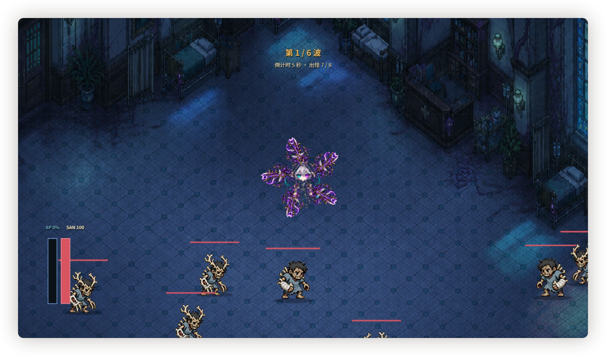

作品 01 / H5 GAME
我在精神病院斩神Hospital Slayer
你是患者 0001，从顶楼一路往下砍穿 30 层病区。横屏自动战斗，唯一压在身上的数值叫 SAN。
- 平台
- 移动端横屏 H5
- 引擎
- Phaser 3 · TypeScript · Vite
- 状态
- 线上可试玩

玩法
横屏自动战斗，角色自己出手，玩家管的是走位、捡掉落、什么时候停手。每场战斗会持续掉 SAN，低于 30 自动进入异化：攻击和出怪压力一起上升，护盾吸收下降。
主线每层 10 波，第 7 波是本层小首领，打完才允许继续往下；每日挑战 50 波，末尾是月度首领。
病历
所有界面按病历做。角色页不是属性面板，是一张病人档案：患者 0001、绰号〈光〉、病历编号 W07-01，症状记录写着失聪、低语幻听、红光过敏，而这几条症状同时是武器和皮肤的解锁条件。
武器分剑、枪、鞭、炮四类，收在「武器皮肤」页里，每一把都像从病院里捡来的。
关卡
30 层病区，前十层共用一套病房素材，靠光照、敌人配比和波次数量拉开差别。同一间病房，白天和夜里是两种打法。
界面


